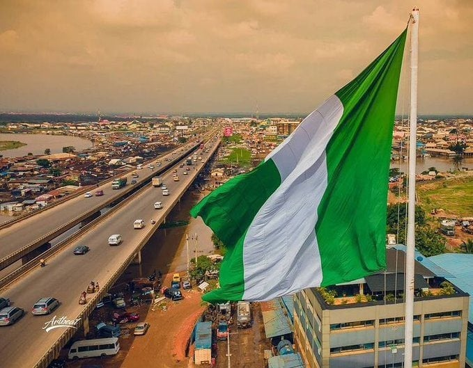

Nigeria

Nigeria is a vibrant and diverse country located in West Africa. It is the most populous country on
the continent, home to over 200 million people, representing more than 250 ethnic groups, with the
Hausa, Yoruba, and Igbo being the largest.
The country has a rich cultural tapestry, evident in its music, dance, art, and festivals. Nigeria is
renowned for its film industry, Nollywood, which produces a vast number of movies each year, and for
its music scene, which has gained international recognition, particularly genres like Afrobeats.
Geographically, Nigeria features a variety of landscapes, from the lush forests of the south to the
arid north and the Niger River delta. The economy is one of the largest in Africa, heavily reliant on
oil exports, but also has a growing agricultural sector.
Nigeria faces challenges such as political instability, corruption, and infrastructure issues, yet it
remains a country full of potential, resilience, and dynamic growth. The spirit of its people,
characterized by hospitality and creativity, contributes to its unique identity on the world stage.